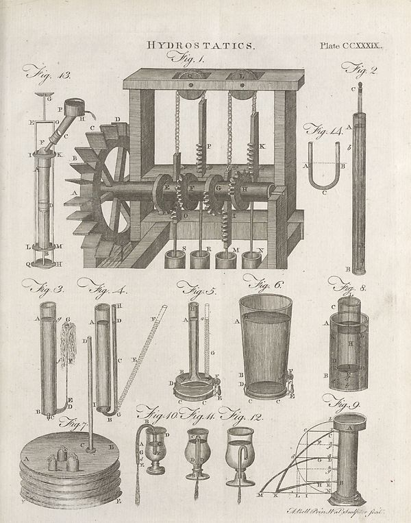

Source · scan and Parse blocks
Layers 1

Parse text by block reading order
- 0PictureHYDROSTATICS. Plate CCXXXIX.
Provenance page_id, checksum, Parse model
- page_id
- britannica:309f765b1ecc83e0a7f7762e44b4a927a7555443:train:270
- sha256
- 6831cc1f149b50ecdf07b3af7ab3e4ef10572a486faafa06481061973c4100f8
- Parse
- nvidia/nemotron-3.5-parse · finish stop